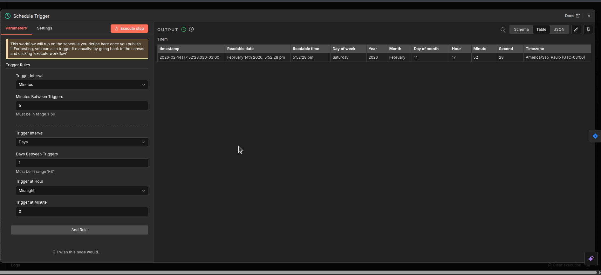
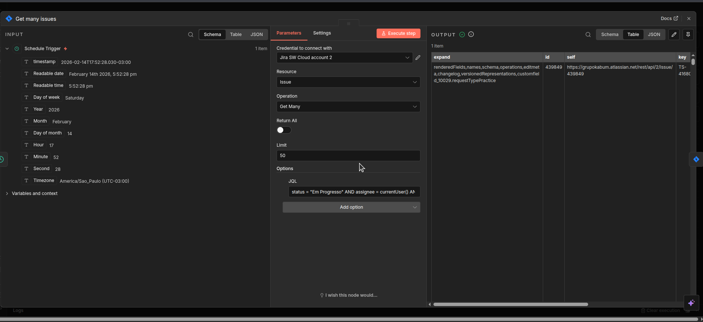

1. A Chave de Acesso (Token de API)
Para que o robô (n8n) consiga ler e escrever no seu Jira, ele precisa de uma senha especial chamada Token. Isso garante que só o seu robô tenha acesso aos dados.
1.1 Criando o Token no Jira
Acesse o portal da Atlassian, dê um nome para sua chave (como "n8n_teste") e guarde o código que ele vai te mostrar.


2. O Coração da Automação (n8n Workflow)
Aqui é onde montamos o caminho que o robô vai seguir. Ele funciona como uma linha de montagem: cada caixa (nó) faz uma tarefa específica.
2.1 Visão Geral do Processo
Abaixo você vê o fluxo completo. Note que as setas indicam o caminho da informação, do relógio até a última trava.

2.2 O Despertador (Schedule Trigger)
Configuramos o robô para acordar e olhar sua fila de chamados a cada 5 minutos. Assim, nenhum cliente fica esperando muito tempo.

3. A Inteligência do Robô (Filtro e Resposta)
O robô não pode sair respondendo tudo. Ele precisa saber quais chamados são novos e quais ele já respondeu.
3.1 O Filtro de Busca (JQL)
Usamos um código especial para dizer ao robô: "Só pegue chamados que estão Em Progresso e que não tenham a marcação do meu robô na descrição".
status = "Em Progresso" AND assignee = currentUser() AND (description !~ "comentado_por_dani" OR description is EMPTY)

3.2 Enviando o Comentário
Se o chamado passar no filtro acima, o robô escreve a sua mensagem de boas-vindas automaticamente.

4. A Trava de Segurança (Evitando o Spam)
Para o robô não responder a mesma pessoa infinitamente, ele precisa "carimbar" o chamado após comentar.
4.1 Atualizando o Chamado
O robô pega a descrição atual e adiciona um código secreto no final: - comentado_por_dani. Da próxima vez que ele rodar, ele lerá esse código e saberá que já fez o trabalho ali.

5. Verificação Final
Com tudo configurado, o robô agora trabalha sozinho. Você pode ver o histórico de sucesso no n8n e a resposta real lá no Jira.
5.1 Automação Ativa
O botão verde Published indica que o robô está vigiando sua fila agora mesmo.

5.2 Resultado no Jira
Veja como o cliente recebe a mensagem de forma limpa e profissional.